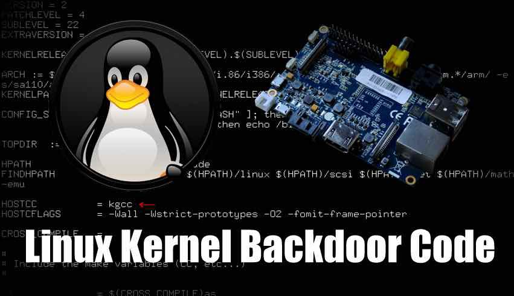

HackTheBox Write-up: Netmon
th3d00msl4y3r
xbytemx
Objetivo
Revisar algunos ejemplos practicos de como lucen los backdoors en linux
Agenda
- ¿Qué es un backdoor?
- ¿Qué tipos de backdoors podemos encontrar?
- ¿Rootkit ?
- Reptile Wins.
- BONUS: Analisis forense de una maquina comprometida
¿Qué es un backdoor?

Conceptos interesantes
- Puerta trasera; nueva o existente
- Post-comprometida
- Persistencia
- knock knock?
- proceso, módulo o estático
¿Que tipos de backdoors podemos encontrar?
Backdooring
.ssh/authorized_keys.bashrc, .bash_aliases and friends- /var/www/html/$(generate-a-random-backdoor-name-here).php
- /var/spool/cron/crontabs/${USER}/hello-im-a-backdoor
systemctl --user enable im-a-user-backdoor.service- msfvenom blahblah >>
.local/bin/wget
Permisos
Si la máquina no ha sido comprometida a nivel de root, podemos aplicar permisos sobre archivos importantes de configuracion para que no se comprometa por completo.
Monitoreo
Estar monitoreando de manera continua estos archivos nos permite enterarnos de los cambios en el sistema. Inclusive si un atacante deshabilita nuestro sistema de monitoreo, ganamos tiempo de respuesta ante un incidente.
Se solicita de su colaboración!
Rootkits… 90’s are back
- Software que se esconde dentro de las maquinas
- /proc? LKM? R: Syscalls.
- Enyelkm, Diamorphine, Reptile
git clone and fun
git clone https://github.com/f0rb1dd3n/Reptile
Playground!
Muchas gracias por asistir
¿Preguntas?